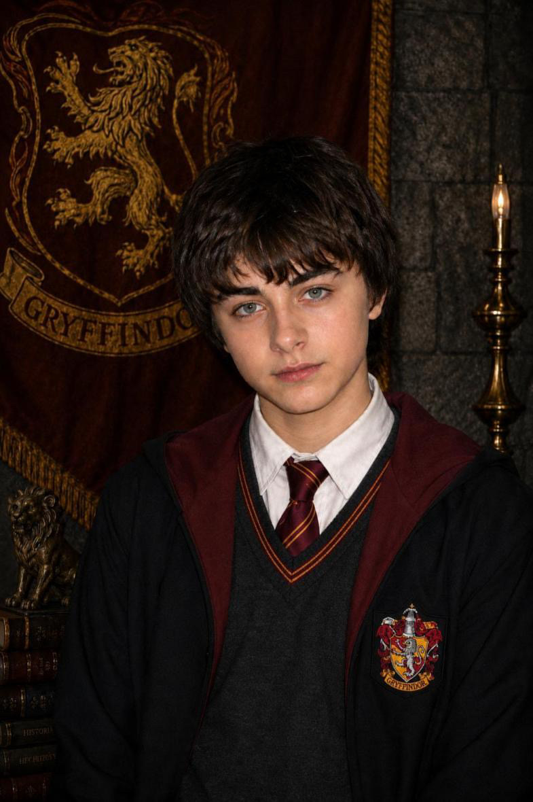
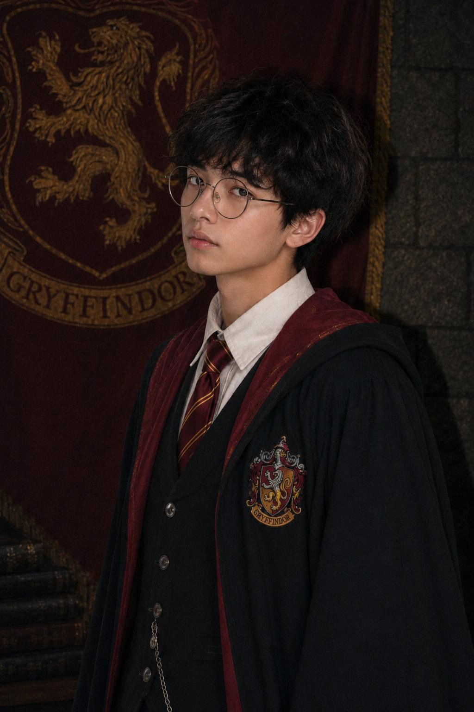

Jefe de Casa

Noah O. Gaunt
Profesor de DCAO · Jefe de Casa de Gryffindor
Fundada por Godric Gryffindor, esta casa reúne a estudiantes reconocidos por su valentía, determinación, nobleza y disposición para defender aquello en lo que creen.
Profesor de DCAO · Jefe de Casa de Gryffindor

Segundo Año · Buscador de Quidditch

Segundo Año
Segundo Año · Quidditch

Tercer Año · Prefecta

Tercer Año · Quidditch · Fotografía

Tercer Año · Porrista

Tercer Año

Cuarto Año · Comité del Anuario

Sexto Año · Prefecto Reclutador
Sexto Año · Quidditch
Sexto Año · Porrista

Sexto Año

Sexto Año

Sexto Año · Quidditch

Sexto Año · Quidditch

Sexto Año

Sexto Año · Porrista

Sexto Año

Séptimo Año · Prefecta

Séptimo Año · Prefecta

Séptimo Año · Prefecto

Séptimo Año · Jefa de Prefectos

Séptimo Año · Capitán de Quidditch

Séptimo Año

Séptimo Año

Séptimo Año

Séptimo Año

Séptimo Año · Quidditch

Séptimo Año

Séptimo Año

Séptimo Año